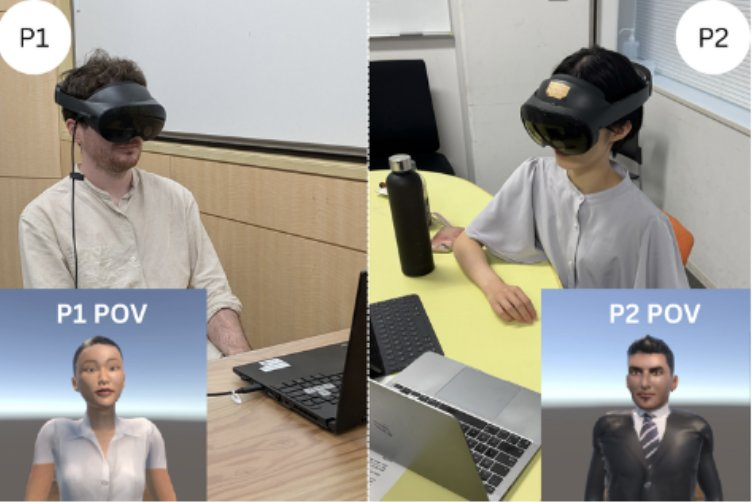
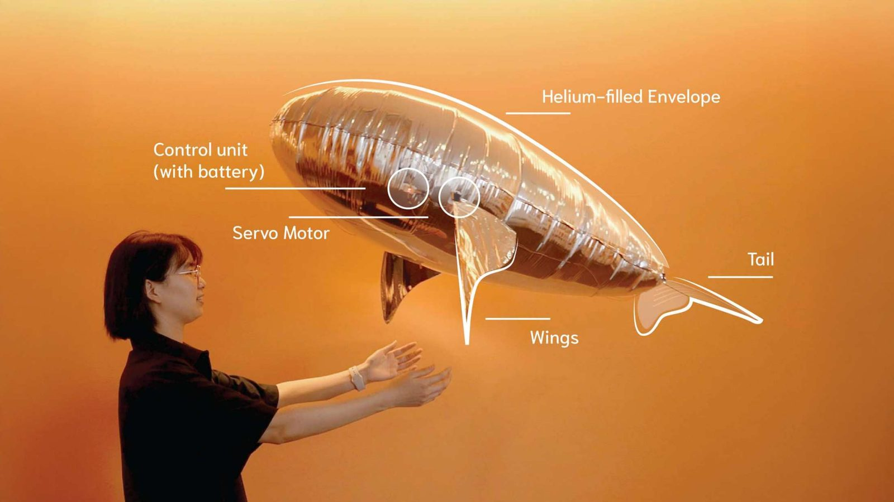
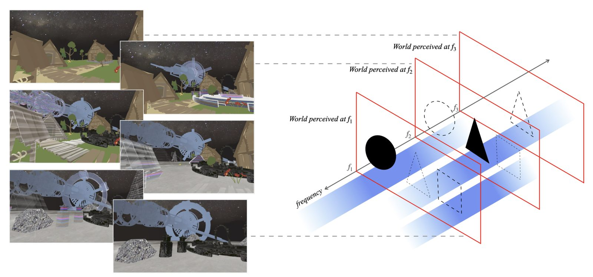
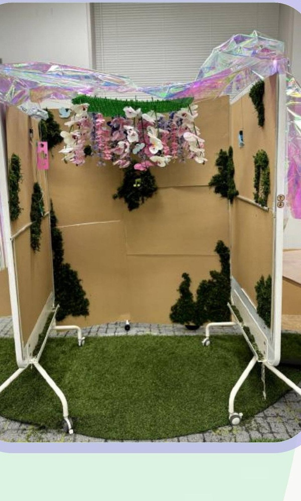

Research & Design
Projects
Case studies from my research program — how I design studies, run them, and turn findings into design recommendations.

Behavioral Synchrony in VR Communication
Controlled VR study · N=44 English/Japanese dyads
I designed and ran a controlled VR study comparing face-to-face and back-to-back conversation conditions to isolate the effect of nonverbal behavioral synchrony on how connected people feel to a conversation partner. The study spanned both English- and Japanese-speaking dyads, and I conducted 60+ semi-structured interviews to understand participants' subjective experience alongside the quantitative outcome measures.

Cuddle-Fish — Soft Floating Social Robot
Mixed-methods study · 24 participants
Cuddle-Fish is a soft, floating robot with flapping wings, built to explore whether people can form empathic, emotional bonds with a non-humanoid companion through physical, embodied interaction rather than a screen. I designed and led the mixed-methods evaluation — interviews plus thematic analysis of behavioral and emotional responses — that shaped the robot's final interaction design.

Spectral Space — Virtual Space Design
Comparative user study vs. conventional scene transitions
Spectral Space is a framework for multilayer, continuous virtual environments organized by spectral (frequency-domain) relationships between entities, letting users move fluidly between multiple coexisting worlds. I designed the study methodology and interview protocol, ran the user study, and led the qualitative analysis, developed with collaborators in Prof. Jun Rekimoto's lab at the University of Tokyo.
Terra Pika — AI for SDGs Youth Bootcamp
Tsinghua Institute for AI International Governance, supported by UNDP China
Directed research and prototype development for an AI-driven social-emotional learning concept for children, evaluating where NLP, speech recognition, and affect recognition capabilities could create the greatest user value, and translating those findings into functional product requirements. Presented the approach to an international judging panel as a finalist team.

WonderLift — AI-Enabled Immersive Elevator Experience
Stanford Graduate School of Education, Learning Design & Technology Exchange
Built an integrated hardware-software prototype using a Python-based control system to drive Arduino hardware — LED lighting, audio playback, and servo-driven motion — to create an immersive, ambient elevator experience. Demonstrated the working prototype to Stanford University faculty and an interdisciplinary group of collaborators.